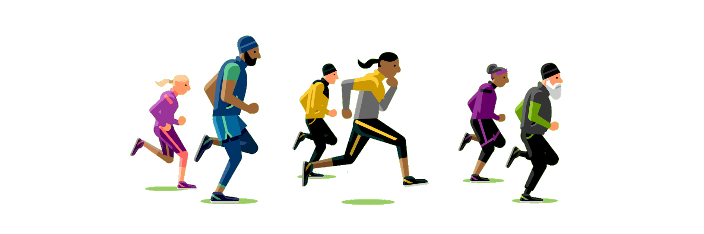

Be physically active throughout the day for growth and development.
Adult caregivers should encourage children to be active when they play.
Types of Activity for Preschool-Aged Children
Games such as tag or follow the leader.
Playing on a playground.
Tricycle or bicycle riding
Walking, running, skipping, jumping, dancing.
Swimming.
Catching, throwing, or kicking games
Gymnastics or tumbling.
What can I do to get - and keep - my child active?
Make physical activity part of your family's daily routine by taking family walks or playing
active
games together.
Give your children equipment that encourages physical activity.
Kicking a ball back and forth or into a goal
Playing games such as "Duck, Duck, Goose" or "Follow the Leader," then mixing it up with
jumping,
hopping, and walking backward
Playing freeze dance or freeze tag
Hitting a ball off a T-ball stand
Others
2. Children and Adolescents (6-17 years)
60 mins (1 hour) or more of moderate-to-vigorous intensity physical activity daily.A variety of
enjoyable physical activities.

Types of Activity for Adolescents (6-17 years) Children
Vigorous Activity such as running or soccer.
Activity that strengthens muscles such as climbing or push ups.
Activity that strengthens bones such as gymnastics or jumping rope.
Most of the daily 60 minutes should include activities like walking, running, or anything
that
makes
their hearts beat faster.
Includes activities like climbing or doing push-ups, at least 3 days per week.
Includes activities such as jumping or running, at least 3 days per week.
Encourage Your Child to Be Physically Active
Talk with your child's doctor. Your child's doctor can help your child understand why
physical
activity
is important.
Get the entire family involved. It is a great way to spend time together.
Make sure your child has a convenient time and place to exercise.
Provide active toys. Young children especially need easy access to balls, jump ropes, and
other
active
toys.
Children who regularly see their parents enjoying sports and physical activity are more
likely to do
so
themselves.
Play with your children. Help them learn a new sport or another physical activity. Or just
have fun
together by going for a walk, hike, or bike ride.
Limit screen time, including time spent on TV, videos, computers, and video games, each day.
Use the
free time for more physical activities.
3. Adults (18-64 years)
At least 150 minutes a week of moderate intensity activity such as brisk walking.
At least 2 days a week of activities that strengthen muscles.
Aim for the recommended activity level but be as active as you are able.
Types of Activity for Adults (18-64 years)
Yoga
Running
Swimming
Walking up the stairs
Sports, like football, rugby, netball and hockey
Lifting heavy weights
Pushing a lawn mower
Dancing
Hiking
Doubles tennis
SOME STRATEGIES TO INCREASE PHYSICAL ACTIVITY
Be active yourself and make family activities active
Encourage the Use of Stairs Instead of the Lift
Encourage Patients to be Physically Active at Least 150 Minutes Per Week
Create Healthy Environments by Making It Easier to be Physically Active Where We Live,
Learn, Work,
Play, and Pray
Start a Running Club
Others
4. Older Adults (65 years and older)
At least 150 minutes a week of moderate intensity activity such as brisk walking.
At least 2 days a week of activities that strengthen muscles.
Activities to improve balance such as standing on one foot.
Types of Activity for Older Adults (65 years and older)
Some forms of yoga.
Walking your dog
Bicycle riding (stationary or outdoors)
Some yard work, such as raking and pushing a lawn mower.
Doing light exercises while watching TV
Jogging
Climbing stairs/hills
Using a resistance band
Others
There are many benefits of exercising when you are a senior citizen
It improves your strength. This helps you stay independent.
It improves your balance. This prevents falls.
It gives you more energy.
It prevents or delays diseases, such as heart disease, diabetes, or osteoporosis.
It can improve your mood and fight off depression.
It may improve cognitive function (how your brain works).
others
5. Healthy Pregnant or Postpartum Women
Moderate-intensity physical activity is safe for you during pregnancy if you are
generally healthy. It can help reduce your risk of excessive weight gain and gestational
diabetes and keep your heart and lungs healthy. During the postpartum period (first
year after delivery), physical activity can decrease symptoms of postpartum depression.
When combined with caloric restrictions, it can also help you with weight loss after
delivery.
Physical Activity Recommendation
Get at least 150 minutes (for example, 30 minutes 5 days a week) of moderate-
intensity aerobic activity a week during pregnancy and the postpartum period.
Remember, some physical activity is better than none, so do what you can.
Benefits
Reduces the risk of excessive weight gain during pregnancy.
Reduces the risk of gestational diabetes during pregnancy.
Reduces symptoms of postpartum depression.
6. Adults with Chronic Conditions and Disabilities
Regular physical activity provides important health benefits for those
with chronic health conditions or disabilities, including cancer
survivors and people with osteoarthritis, hypertension, type 2
diabetes, multiple sclerosis, stroke, Parkinson's Disease, spinal
cord injury, dementia, and other cognitive disorders.
Adults with chronic health conditions or disabilities who are able should:
Get at least 150 minutes (for example, 30 minutes 5 days a week)
of moderate-intensity aerobic physical activity a week.
Get at least 2 days a week of muscle- strengthening activities
that include all major muscle groups.
Benefits
Supports daily living activities and independence.
Immediately helps you feel, function, and sleep better.
Helps control weight and improves mental health by reducing depression and anxiety.
Lowers the risk for early death, heart disease, type 2 diabetes, and some cancers.
Decreases pain and improves function in people with osteoarthritis.
Improves cardiovascular health, muscle fitness, and brain health.


.jpeg)
.jpeg)